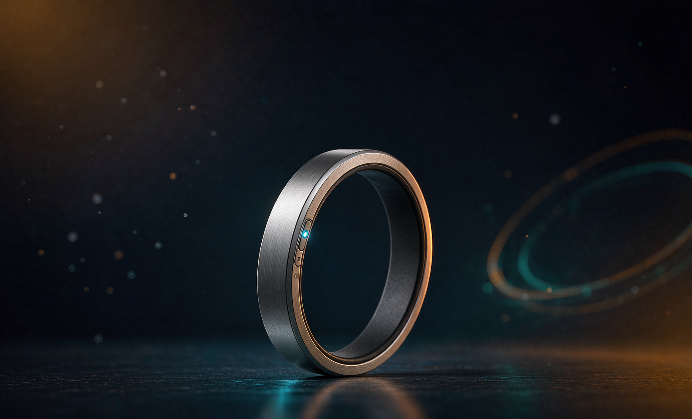

以上数据为展示示意，实际参数以产品说明书为准。
东方养护智慧，遇见智能科技
「橘井泉香」流传千年，讲的是未病先防、日常调养。我们相信，最好的健康管理不在诊室，而在每一个平常的昼夜里。
橘井方源大健康管理有限公司
我们以东方养护理念为根基，融合微型传感、可穿戴硬件与人工智能技术，构建「感知 — 理解 — 建议 — 陪伴」的日常健康闭环。
公司推出 AI 智能指环：以一枚轻量指环，持续采集睡眠、心率、血氧、皮温等生理信号，经端侧计算与 AI 模型分析，转化为看得懂、做得到的个性化养护建议。
以人为源
从真实生活场景出发，而非从参数出发，让技术安静地服务于人。
无感陪伴
极小形态、极低打扰，健康数据在日常中自然沉淀。
中西合参
传统养护智慧与现代生理指标互相印证，形成可解释的建议。
数据向善
端侧优先、最小必要采集，隐私设计贯穿产品全生命周期。
AI 智能指环 · 现已发布
一枚指环，一座随身健康实验室。以微型传感与 AI 健康模型，把全天候的健康照见变成日常。

睡眠分期
识别深睡、浅睡、REM 与清醒时段，还原整夜睡眠结构。
01心率与 HRV
静息心率、心率变异性连续追踪，观察身体恢复节律。
02血氧饱和度
夜间低氧趋势监测，为睡眠呼吸健康提供参考线索。
03皮温趋势
建立个人温度基线，捕捉周期与状态的细微变化。
04活动与能量
步数、活动时长与消耗估算，串联日间行为与夜间恢复。
05压力与恢复
多指标融合评估身心负荷，给出呼吸、作息等轻建议。
06※ 上述能力描述不构成医疗器械功能宣称，不构成诊断或治疗建议。
看得见的技术路径
从指尖的一束光，到一份可执行的养护建议 —— 三张示意图，讲清楚它如何工作。
环体结构剖面示意
七层微型模组，集成于不足 1 cm 的环壁之内
健康数据闭环示意
采集、理解、建议、反馈，形成持续进化的个人健康模型
一夜数据的读法
把连续信号，翻译成看得懂的睡眠故事
AI 晨间简报 （示意）
- 睡眠结构
总睡眠 7h12m，深睡占比 21%，较个人基线 +3%。
- 恢复状态
夜间最低心率平稳，HRV 处于近 14 日常态区间。
- 今日建议
宜保持规律作息，睡前 1 小时减少强光与剧烈运动。
示意内容仅用于展示数据呈现方式，不构成医疗建议。
融入生活，不打扰生活
从一个人的夜晚，到一家人的牵挂，健康管理可以有更多温柔的形态。
睡眠养护
面向睡眠质量关注人群，以长期趋势替代单日分数，配合作息与养护内容形成温和干预。
日常健康管理
为忙碌的职场人群提供轻量、无需额外操作的健康记录与状态提醒。
长者关怀
在授权前提下，让家人了解睡眠与活动趋势，把远距离的牵挂变成安静的守护。
机构健康服务
面向健康管理机构、康养社区与企业福利场景，提供数据看板与服务接口。
与我们同行
无论您是关注健康的个人用户、渠道伙伴，还是希望共同探索健康服务的机构，欢迎留下联系方式。产品资讯与合作政策将在第一时间同步。
※ 当前为前台展示版本，暂未接入后台服务与数据提交能力。